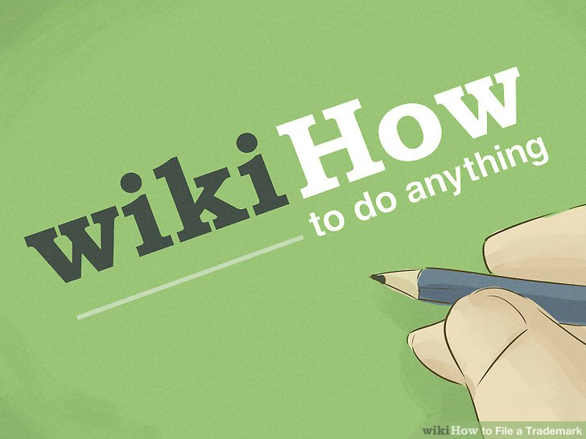

SailingForDummies.com
Sailing
Sources
https://www.wikihow.com/Sail-a- Boat
https://www.boat-ed.com/nasbla_cre_mem/studyGuide/Parts-of-a-Sailboat/183099_700086101/
https://www.pinterest.com/pin/45950858669251576
